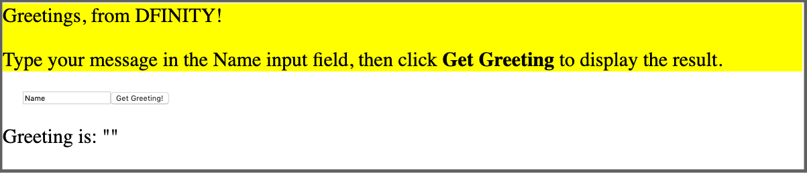
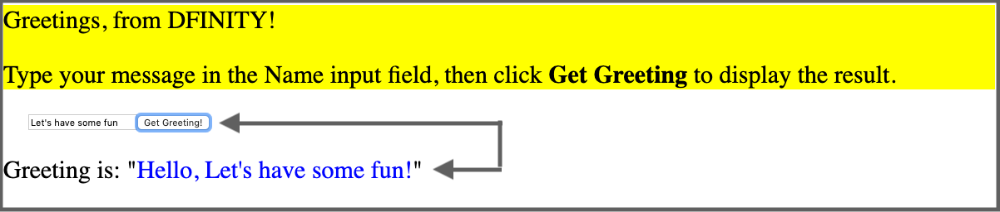
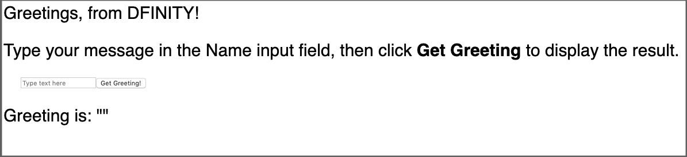

自定义前端
现在，你已经对如何创建，构建和部署一个简单的程序有了基本的理解，并且熟悉了默认的项目文件和示例前端。也许你想要为你的项目实验不同的方法来自定义前端用户体验。
这篇教程讲解了使用简单的React框架为默认示例程序创建一个新的前端，并引导你对一些基本的接口进行自定义修改。
之后的教程会对这里的介绍做扩展，但是如果你已经了解了如何使用CSS，HTML，JavaScript和React等其它构建UI的框架，你可以跳过这个教程。
注意: 这个教程讲解了如何在Canister使用React框架来管理DOM。因为React有自己的DOM规则，你需要修改webpack配置来编译JSX编写的前端代码。需要更多学习React和JSX的信息，查看Getting started ，在 React网站
开始之前
开始之前，需要检查以下内容
-
为前端开发安装了node.js并且可以使用npm install在项目中安装包。需要更多关于安装node和包管理器的信息，请查看Node 网站
-
已经下载并安装了 DFINITY Canister SDK
-
安装了Motoko 的VSCode 插件
-
终止了所有ICP网络进程
注意: 由于HTTP请求和前端资源有很大的修改，本教程假定你使用了DFX_VERSION环境变量安装了0.7.0-beta版本的SDK。要查看修改日志，请看这篇文章。如果你使用的是0.6.26或更早的版本，点击Support链接获取本教程更早的版本。
本篇教程需要大概30分钟
创建新项目
创建一个自定义前端程序步骤
-
打开本地命令终端
-
修改当前目录到ICP项目目录
-
运行下面的命令检查你已经在本地安装了node.js
which node which npm如果你没有安装nodejs，你应该在下一步前下载并安装好。要了解更多关于安装node的信息，请查看Node网站。
-
运行下面的命令创建项目
dfx new custom_greetingdfx new custom_greeting命令会创建一个新的custom_greeting项目
-
运行下面的命令进入项目目录
cd custom_greeting
安装React框架
如果你不了解React框架，可以在React网站进行探索。
安装React模块步骤如下
-
运行下面的命令安装React模块
npm install --save react react-dom -
运行下面的命令安装Typescript加载器
npm install --save-dev typescript ts-loader注意: 另一个安装模块的方法是，你可以编辑package.json文件来添加模块
{ "name": "custom_greeting_assets", "version": "0.1.0", "description": "Internet Computer starter application", "keywords": [ "Internet Computer", "Motoko", "JavaScript", "Canister" ], "scripts": { "build": "webpack", "prebuild": "npm run copy:types", "start": "webpack serve --mode development --env development", "prestart": "npm run copy:types", "copy:types": "rsync -avr .dfx/$(echo ${DFX_NETWORK:-'**'})/canisters/** --exclude='assets/' --exclude='idl/' --exclude='*.wasm' --delete src/declarations" }, "devDependencies": { "@dfinity/agent": "0.10.0", "@dfinity/candid": "0.10.0", "@dfinity/principal": "0.10.0", "assert": "2.0.0", "buffer": "6.0.3", "copy-webpack-plugin": "^9.0.1", "events": "3.3.0", "html-webpack-plugin": "5.3.1", "process": "0.11.10", "stream-browserify": "3.0.0", "terser-webpack-plugin": "5.1.1", "util": "0.12.3", "webpack": "5.24.4", "webpack-cli": "4.5.0", "webpack-dev-server": "^3.11.2" }, "browserslist": [ "last 2 chrome version", "last 2 firefox version", "last 2 safari version", "last 2 edge version" ], "dependencies": { "react": "^17.0.2", "react-dom": "^17.0.2", "ts-loader": "^9.2.3", "typescript": "^4.3.5" } }
查看默认配置
在修改代码前，让我们看一下dfx.json中默认的前端配置。
查看dfx.json配置步骤：
-
编辑器中打开dfx.json
-
注意到canister下包含了custom_greeting_assets的配置
{ "canisters": { ... "custom_greeting_assets": { "dependencies": [ "custom_greeting" ], "frontend": { "entrypoint": "src/custom_greeting_assets/src/index.html" }, "source": [ "src/custom_greeting_assets/assets", "dist/custom_greeting_assets/" ], "type": "assets" } } }配置项解析
-
项目的前端资源会编译到自己的canister，在这里被称为 custom_greeting_assets.
-
资源默认依赖于项目的主Canister。
-
frontend.entrypoint指定了一个文件的路径-这里是index.html文件-作为项目入口使用。如果你希望有一个不同的入口文件-例如，自定义的first-page.html文件-你可以修改这一项。
-
source设置指定了src和dist目录。src指定了构建项目时会包含到资源canister的静态资源目录。如果你有CSS或JavaScript文件，你可以把这些文件放在这个目录。构建完项目后，项目资源会保留在dist项指定的目录
-
type配置指定了custom_greeting_assets是一个资源canister而不是程序canister
这篇教程中，我们会在一个index.jsx文件中添加React JavaScript，无需对dfx.json文件进行修改。
-
-
关闭dfx.json文件继续。
查看默认前端文件
本篇教程中，你将使用默认的main.mo文件，只需要修改前端代码。在修改代码前，让我们看一看默认的前端代码。
查看前端代码步骤：
-
编辑器中打开src/custom_greeting_assets/src/index.html 文件
这个前端文件是应用的默认入口，由dfx.json文件的frontend.entrypoint指定。
这个文件包含标准HTML代码和指向CSS的引用以及位于src/custom_greeting_assets/assets目录的图片。默认的index.html文件也包含了一个输入框和一个可点击按钮的标准HTML语法。
这个前端和Viewing the default front-end章节一样
-
编辑器中打开 src/custom_greeting_assets/src/index.js 文件
import { custom_greeting } from "../../declarations/custom_greeting"; document.getElementById("clickMeBtn").addEventListener("click", async () => { const name = document.getElementById("name").value.toString(); // Interact with custom_greeting actor, calling the greet method const greeting = await custom_greeting.greet(name); document.getElementById("greeting").innerText = greeting; });-
默认的index.js的第一个import语句使用JavaScript Agent库创建一个actor和一个agent实例
-
第二个import语句会准备custom_greeting canister来构造actor
-
接下来的2个语句构造了agent和actor
-
剩余的代码提供了处理默认程序的文档对象
-
-
关闭index.js继续。
修改前端文件
现在为默认程序创建一个新的前端
准备前端文件步骤：
-
编辑器中打开webpack配置文件 (webpack.config.js)
-
用index.jsx替换前端配置项index.html
entry: { // The frontend.entrypoint points to the HTML file for this build, so we need // to replace the extension to `.js`. index: path.join(__dirname, asset_entry).replace(/\.html$/, ".jsx"), }, -
在plugins上添加下面的module
module: { rules: [ { test: /\.(js|ts)x?$/, loader: "ts-loader" } ] }, -
在项目根目录创建tsconfig.json文件
-
编辑器中打开tsconfig.json，复制粘贴下面的内容：
{ "compilerOptions": { "target": "es2018", /* Specify ECMAScript target version: 'ES3' (default), 'ES5', 'ES2015', 'ES2016', 'ES2017', 'ES2018', 'ES2019' or 'ESNEXT'. */ "lib": ["ES2018", "DOM"], /* Specify library files to be included in the compilation. */ "allowJs": true, /* Allow javascript files to be compiled. */ "jsx": "react", /* Specify JSX code generation: 'preserve', 'react-native', or 'react'. */ }, "include": ["src/**/*"], } -
保存修改并关闭tsconfig.json文件继续
-
打开默认的src/custom_greeting_assets/src/index.js文件，删除7-12行
-
复制粘贴下面的示例代码
import * as React from "react"; import { render } from "react-dom"; import { custom_greeting } from "../../declarations/custom_greeting"; const MyHello = () => { const [name, setName] = React.useState(''); const [message, setMessage] = React.useState(''); async function doGreet() { const greeting = await custom_greeting.greet(name); setMessage(greeting); } return ( <div style={{ "fontSize": "30px" }}> <div style={{ "backgroundColor": "yellow" }}> <p>Greetings, from DFINITY!</p> <p> {" "} Type your message in the Name input field, then click{" "} <b> Get Greeting</b> to display the result. </p> </div> <div style={{ margin: "30px" }}> <input id="name" value={name} onChange={(ev) => setName(ev.target.value)} ></input> <button onClick={doGreet}>Get Greeting!</button> </div> <div> Greeting is: " <span style={{ color: "blue" }}>{message}</span>" </div> </div> ); }; render(<MyHello />, document.getElementById("app")); -
运行下面的命令将index.js文件重命名为index.jsx
mv src/custom_greeting_assets/src/index.js src/custom_greeting_assets/src/index.jsx -
打开文件 src/custom_greeting_assets/src/index.html ， 将body内容替换为 <div id="app"></div>.
<!doctype html> <html lang="en"> <head> <meta charset="UTF-8"> <meta name="viewport" content="width=device-width"> <title>custom_greeting</title> <base href="/"> <link type="text/css" rel="stylesheet" href="main.css" /> </head> <body> <div id="app"></div> </body> </html>
查看新前端
现在可以通过输入资源canister识别码访问默认程序的新的前端。
查看自定义前端步骤：
-
打开新终端，运行以下命令
npm start -
打开浏览器，输入 http://localhost:8080.
-
验证你可以触发一个greeting.
例如

-
替换输入框中你想要展示的Name，然后点击Get Greeting查看结果。
例如

修改前端并测试
查看前端后，可以进行一些修改。
修改步骤：
-
编辑器中打开index.jsx文件，并修改style设置。 例如，你可能想要修改字体并在输入框使用占位文字，可以像下面一样修改：
import * as React from "react"; import { render } from "react-dom"; import { custom_greeting } from "../../declarations/custom_greeting"; const MyHello = () => { const [name, setName] = React.useState(''); const [message, setMessage] = React.useState(''); async function doGreet() { const greeting = await custom_greeting.greet(name); setMessage(greeting); } return ( <div style={{ "fontFamily": "sans-serif" }}> <div style={{ "fontSize": "30px" }}> <p>Greetings, from DFINITY!</p> <p> {" "} Type your message in the Name input field, then click{" "} <b> Get Greeting</b> to display the result. </p> </div> <div style={{ margin: "30px" }}> <input id="name" placeholder="Type text here" value={name} onChange={(ev) => setName(ev.target.value)} ></input> <button onClick={doGreet}>Get Greeting!</button> </div> <div> Greeting is: " <span style={{ color: "green" }}>{message}</span>" </div> </div> ); }; render(<MyHello />, document.getElementById("app")); -
保存文件，查看更新后的浏览器
例如

-
输入新的消息查看结果 例如